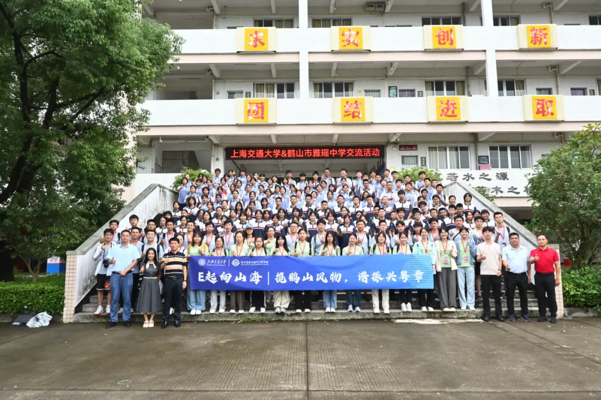
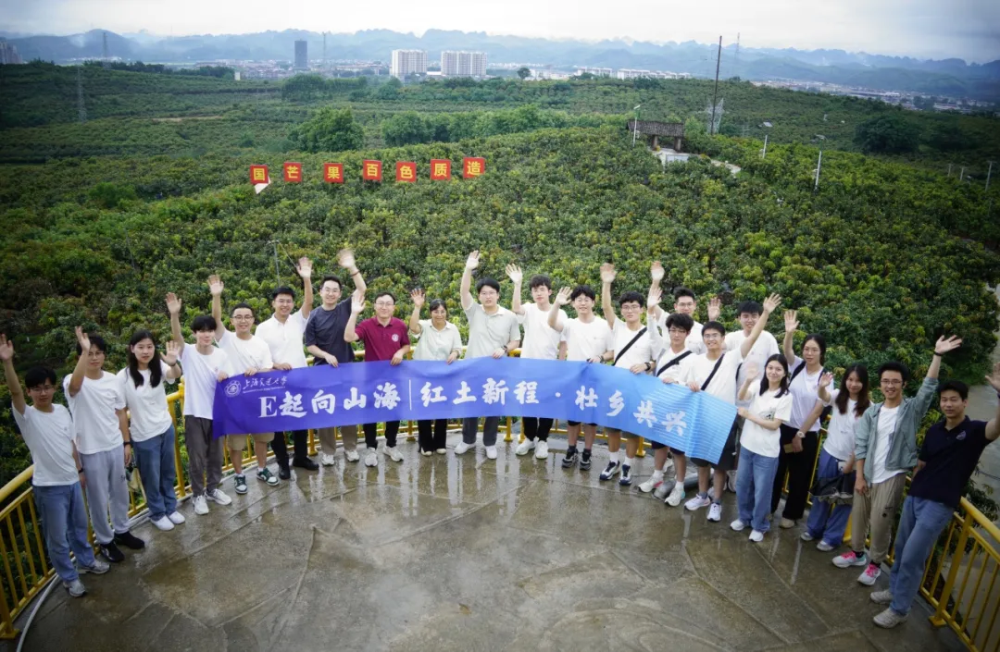
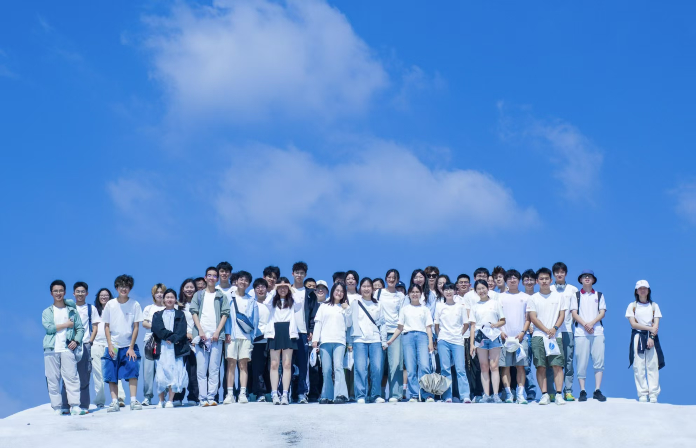

Life
Outside the lab, I enjoy playing badminton, discovering good food, traveling, and taking my time in museums and aquariums. I also treasure the small moments in between—board games with friends, an unexpected encounter with a cat, or a flower in the snow.
Social practice has given me another way to explore new places and learn from the people I meet.
Little Moments
A few snapshots from my travels and everyday life.
No photographs yet.
Social Practice

Heshan: Culture and Rural Revitalization
(山海踏歌行 · 揽鹤山风物，谱振兴新篇)
I co-organized an SJTU social practice project in Heshan, Guangdong, exploring local heritage and rural revitalization.
Project award: Grand Award (university level) · My role: One of the organizers
Read the article ↗
Guangxi: Border-Region Development
(红土新程，壮乡共兴)
I co-organized field research in Guangxi on border-region development and local communities.
Project award: Grand Award (university level) · My role: One of the organizers
Read the article ↗
Tianjin: Industrial Heritage and Waterfront Culture
(沽上百年工，津朝新气象)
Our team explored Tianjin's industrial heritage and waterfront culture through field visits.
Project award: Third Award (university level)
Read the article ↗